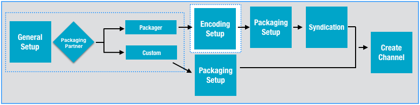
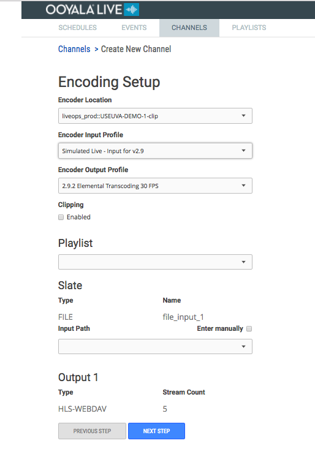

Playlist Encoding Setup allows you to stream VOD assests from Backlot on your Live channel.

| Encoding Setup Page | Considerations |
|---|---|
|

|
Note: The initial Ooyala Live account configuration
constrains your choices when creating channels.
For more information about the Encoding Setup page, see Encoding Setup. |